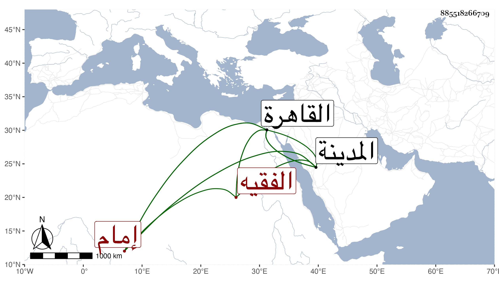

0902Sakhawi.DawLamic.ITO20230111-ara1.EIS1600.885518266709
Biography ID: 885518266709
167
عبد الرحمن بن أحمد بن علي الفقيه زين الدين إمام جامع الحاكم وصديق عبد الله أبي يوسف الآتي . قدم القاهرة فأقرأ الأولاد وقرأ علي وعلى غيري يسيرا كالسيد النسابة وابن أسد ، وحج غير مرة ثم قطن المدينة النبوية مديما للتلاوة في سبع خير بك وتكرر مجيئه القاهرة طلبا للرزق ورأيته في سنة ثمان وتسعين بالمدينة وهو غير منفك عن طريقته ونعم الرجل .
